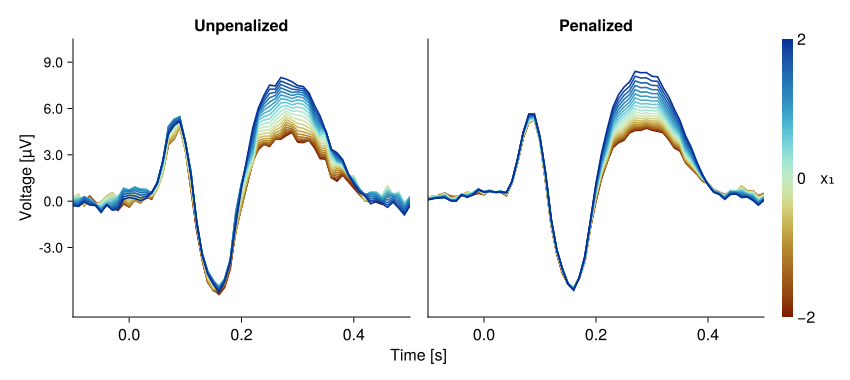

Penalized splines for EEG
Use the same spline basis to fit the simulated EEG with and without a smoothing penalty. The penalized fit estimates one smoothing strength per predictor using REML.
Setup
Install the packages
using Pkg
Pkg.activate(mktempdir())
Pkg.add([
Pkg.PackageSpec(url="https://github.com/Mango-Wang2024/Unfold.jl",
rev="55a451d6e44257c70d99e694db6205499535b3cc"),
Pkg.PackageSpec(url="https://github.com/unfoldtoolbox/UnfoldSim.jl",
rev="994f253c2fa0d918357c94180b206732e0b7b2ae"),
Pkg.PackageSpec(url="https://github.com/Mango-Wang2024/UnfoldPenalizedSplines.jl"),
Pkg.PackageSpec(name="CairoMakie"),
Pkg.PackageSpec(name="UnfoldMakie"),
])using Unfold
using UnfoldSim
using UnfoldPenalizedSplines
using CairoMakie, UnfoldMakieSimulate EEG with a nonlinear effect
Use UnfoldSim to set the P300 amplitude to 5 + x₁ + 0.2x₁². The second predictor, x₂, is generated after the EEG, so its true effect is zero.
p3 = (
p300(; sfreq = 100),
@formula(0 ~ 1 + continuous + continuous^2),
[5, 1, 0.2],
Dict(),
0,
)
data, evts = UnfoldSim.predef_eeg(; noiselevel = 8, p3 = p3)
evts.x1 = evts.continuous
evts.x2 = rand(UnfoldSim.MersenneTwister(1), size(evts, 1))Check the first five events
Each row is one event. latency is the sample where it begins in the EEG recording.
first(evts, 5)| Row | continuous | condition | latency | x1 | x2 |
|---|---|---|---|---|---|
| 1 | 3.8889 | car | 62 | 3.8889 | 0.0991 |
| 2 | -3.8889 | face | 132 | -3.8889 | 0.7020 |
| 3 | -5.0000 | face | 196 | -5.0000 | 0.5033 |
| 4 | -1.6667 | face | 249 | -1.6667 | 0.8758 |
| 5 | 3.8889 | face | 303 | 3.8889 | 0.9535 |
Fit the spline models
Fit both models over the same window, from −100 to +500 ms relative to each event. Both calls use the Unfold fork pinned above. For the unpenalized fit, the solver takes the design matrix X.X from the adapter and uses ordinary least squares. The penalized fit passes the adapter through to the REML solver.
formula = @formula(0 ~ 1 + pspl(x1, 8) + pspl(x2, 8))
basis = firbasis(τ=(-0.1, 0.5), sfreq=100; interpolate=false)
unpenalized = Unfold.fit(UnfoldModel, formula, evts, data, basis;
solver=(X, y) -> Unfold.solver_default(X.X, y))
penalized = Unfold.fit(UnfoldModel, formula, evts, data, basis)Plot the marginal effects
Predict the EEG at 21 values of x₁ while holding x₂ at 0.5. Each color represents one x₁ value.
grid = Dict(:x1 => collect(range(-2, 2; length=21)), :x2 => [0.5])
panel_order = ["Unpenalized", "Penalized"]
effects_combined = vcat(
effects(grid, unpenalized), effects(grid, penalized);
source=:method => panel_order,
)
plot_erp!(Figure(size=(900, 400)), effects_combined;
mapping=(; y=:yhat, color=:x1, group=:x1 => nonnumeric,
col=:method => UnfoldMakie.AlgebraOfGraphics.sorter(panel_order)))